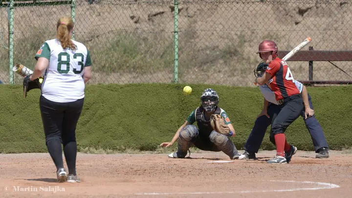
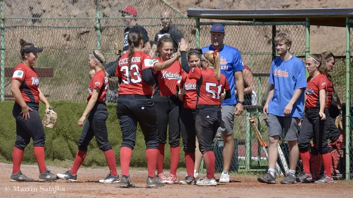
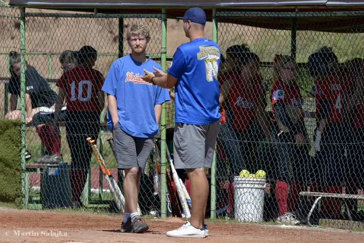
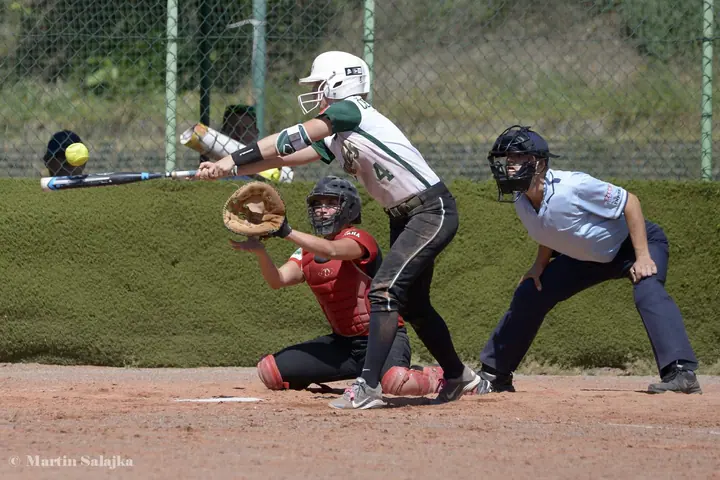
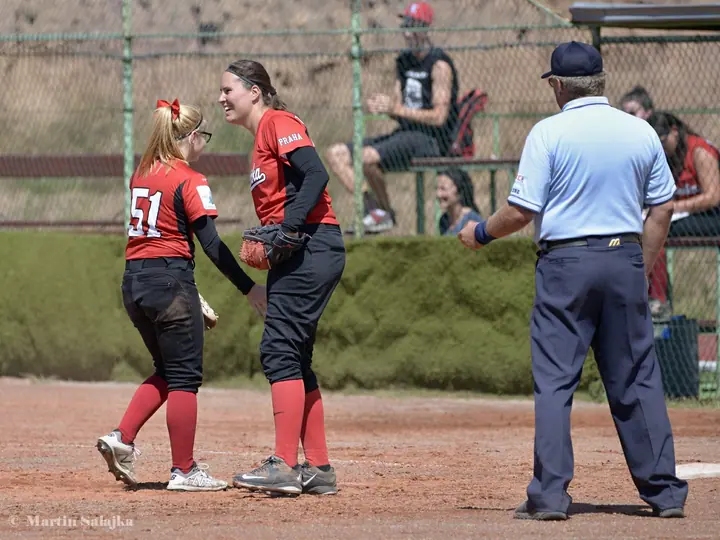
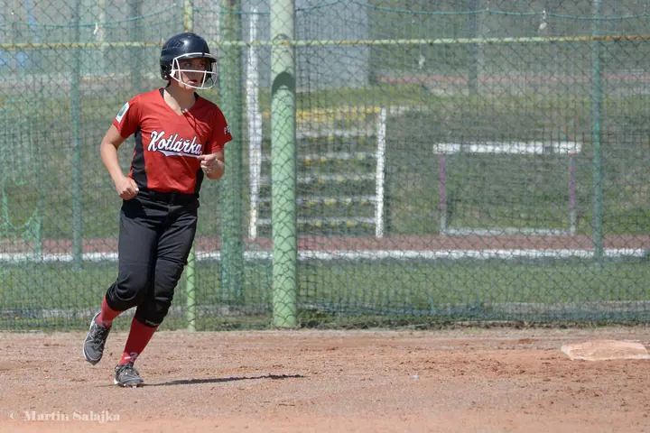
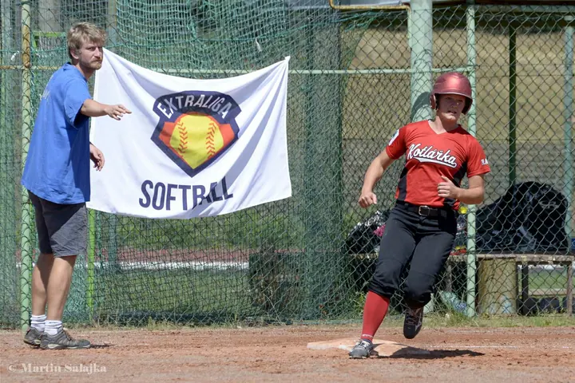
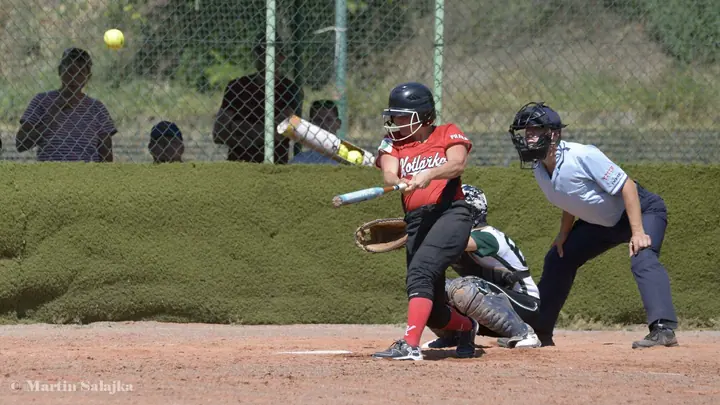
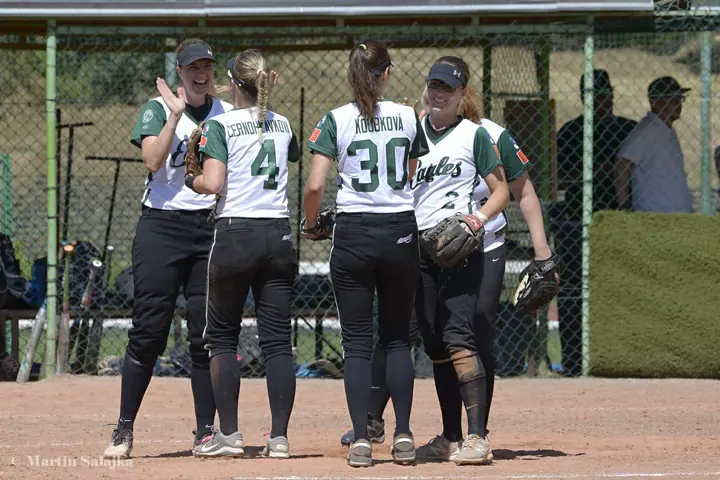

01 / 02
Sportovní zápasy a turnaje
Fotím softballové zápasy přímo od hřiště. Nadhozy, odpaly, běhy na mety i práci chytače a rozhodčího.
Zeptat se na termín→








Softball tak, jak se opravdu hraje
Zeptat se na termín →(01) Ahoj
Jmenuji se Martin Salajka a fotím softball přímo od hřiště . Hlídám nadhoz, odpal i chvíli, kdy se celý tým sejde a slaví . Fotky pak najdete pohromadě v galeriích.
(02) Co fotím
01 / 02
Fotím softballové zápasy přímo od hřiště. Nadhozy, odpaly, běhy na mety i práci chytače a rozhodčího.
Zeptat se na termín→02 / 02
Fotím i to, co se děje mimo samotnou hru: porady na hřišti, střídačku, trenéry a radost celého týmu po dobré směně.
Zeptat se na termín→(04) Postup
Od první zprávy po hotovou galerii.
Krok 1 z 4
Napíšete mi, o jaký zápas nebo turnaj jde, kdy a kde se hraje. Domluvíme se, co od fotek potřebujete.
Krok 2 z 4
Na zápas přijdu včas a fotím celou hru. Hráčky v akci, střídačku i atmosféru kolem.
Krok 3 z 4
Z celého zápasu vyberu povedené snímky a upravím je, aby barvy a světlo seděly.
Krok 4 z 4
Hotové fotky dostanete v online galerii, odkud si je můžete prohlížet, sdílet a stahovat.
Míček je ve vzduchu jen zlomek vteřiny
(05) Za objektivem
Jmenuji se Martin Salajka a nejčastěji mě najdete u softballového hřiště s foťákem v ruce. Fotím zápasy Kotlářky i jejích soupeřek, od prvního nadhozu po poslední aut.
Ve sportu se všechno děje rychle. Míček je ve vzduchu jen zlomek vteřiny, a právě ten chci mít na fotce. Stejně mě ale baví i to, co se děje kolem: porady na hřišti, trenéři u střídačky a radost po povedené směně.
Za ty roky se mi na Rajčeti nasbíralo přes 7 000 fotek. Hráčky, rodiče i fanoušci si v nich můžou dohledat svoje zápasy a vrátit se k nim i po letech.
Martin
Martin Salajka · Sportovní fotograf
Softball fotím nejčastěji, ale rád se domluvím i na jiném sportovním zápasu nebo turnaji. Stačí mi napsat.
Ano. Při domluvě si řekneme, které zápasy jsou pro vás nejdůležitější, a podle toho si naplánuju den.
Fotky dávám do online galerie. Odkaz můžete poslat dál celému týmu.
Záleží na rozsahu akce a délce focení. Napište mi, o co jde, a pošlu vám nabídku.
(07) Kontakt
Napište pár vět o tom, co si představujete, a termín, který se vám hodí.
sal@getphoto.cz